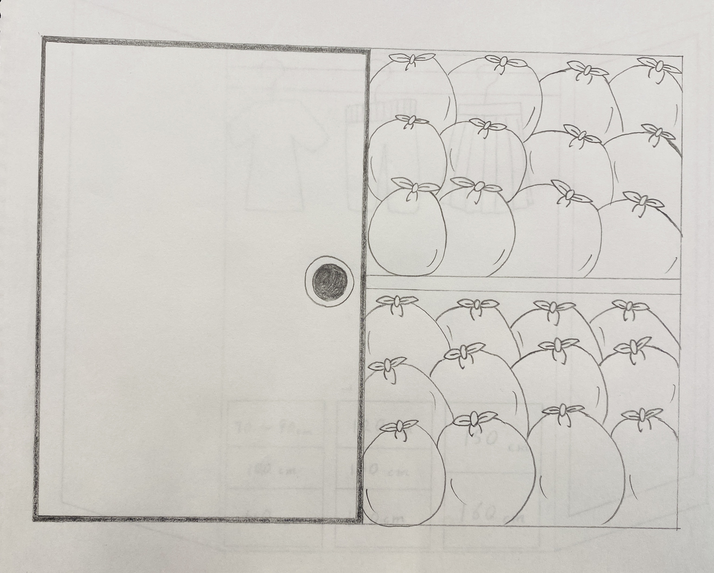
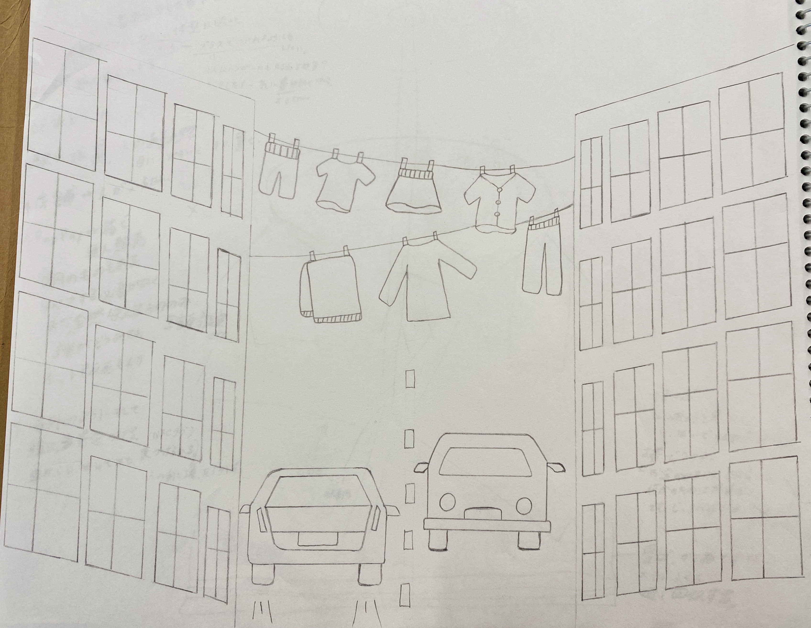
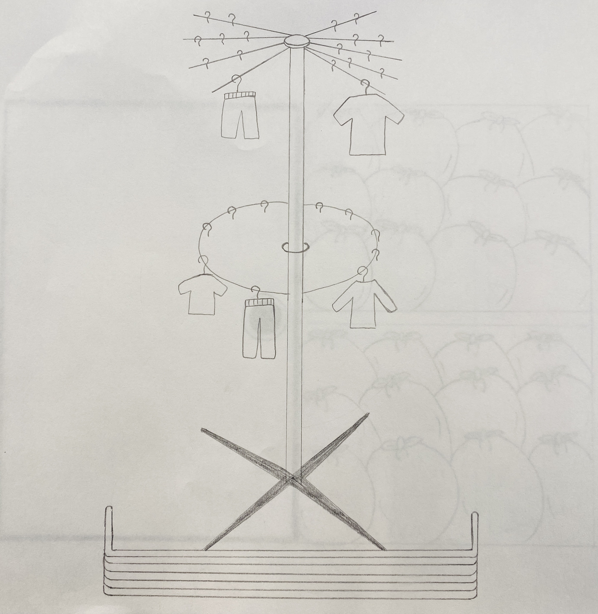
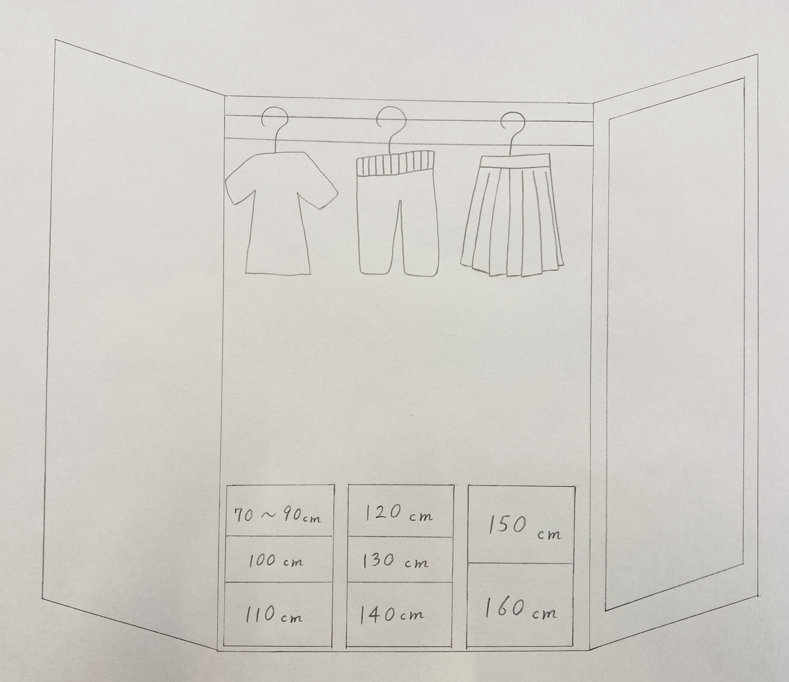

２０２５年１０月１０日
【やったこと】
- Google formの回答共有
- Community Loopsに対する問題共有
- 前回の課題で考えてきたアイデア共有
- グループ作成
Google formの回答共有
共起ネットワークを使用し、共有。
【頻出単語抜粋】
意識を変える。システム・仕組み
何が必要か？→回収・リメイク・循環・創造・経済・持続性・インセンティブ・意識・様式・納得感
自分事として何を考え、何に携われそう？
- 循環、服 そもそも着てる。着ること。→循環・着るをセットで考える。
- 安い・ファストファッション・経済性
- 捨てる方が安いシステム。違う方向に向けていくか？
- 意識を変える→呼びかけ・インフルエンサー・広める
Community Loopsに対する問題共有
- 回収Boxの置く位置が悪い。人目が気になる・手間がかかる
- デジタル化→高齢者ついていけない
- 日本人にボランティア精神(人助けのパッション)が無い
- 利益にならない(経済性に欠ける)
- 服は重くて荷物になるため、学校に持って来たくない
- 回収Boxの文字が小さい
- リペアカフェは閉鎖的で、日本人は出来上がったコミュニティに入れない(意識高い系)
- 技術面・運用コスト・データ入力・メンテナンスが大変
- QRコードただ読み取るとは限らないし、面倒
- トレーサビリティが目的化され、教育に繋がっていない
- 誰のための回収Boxか。どこに向けてるのかがアバウト
- 消費者が修理する権利については、国・法律規模で動かないと厳しい
- 着心地やデザインが大事だが、両立は難しい
- 作らないことは利益と相反する
- ストーリー性必要ない。情報収集の手間。他人の情報は響かない。いつ作られたか・コラボ商品などのアイテムの情報だけで良い
- プライバシー面に関係する。どこまで共有して良いか。
- そもそも思い入れ無い。日常的・ワンシーズン・トレンドだから購入する
- 回収Boxは準備費・道具・場所がかかる。回収後の行き先が不透明
- 汚れたものはダメと基準が不明確
- 日本人は安心感が好き→ブランド化が必要
前回の課題で考えてきたアイデア共有
- アップサイクル、服飾系、リメイク、体験(ぬいぐるみの服etc.)、世代で繋げる(ワンピース→セットアップetc.)
- 回収Boxを面白くする(クレヨンしんちゃん家の押し入れみたいに)
- 自販機みたいなものでレンタル(安いものは借りる)、店舗は入りづらい、見える化し、身近に置く(ex:海外の洗濯物の干し方)
- 誰がどこでといった地域ブランドの確立。リメイク、ワークショップ
- 回収Boxをカフェや地域に設置、オンライン上で循環服を見て購入(リメイク前提)
- トレンドはすぐ過ぎ去る。流行の逆流、“流行を追う側からつくる側へ”→リバーストレンドコーデ
- AIスタイリング 自分の服をアプリに登録し、コーデをAIに発案してもらうアプリを制作
- 自分の中で完結したい。ex:着なくなった服がソファーのカバーにリメイクされ、自分の元に届くサービス
- 回収Boxをコンビニやスーパー、郵便局など身近な所に設置し、いろんな人に知ってもらう
- 子ども向けの服にフォーカスし、衣類循環を広める。NFC付きワッペン。
“いらなくなった動機”という情報には価値がある。(新しい物が欲しいことやプレゼントにはどう対応するかは課題。あげると買うは別かも。)
- マネキンで回収した服を展示(参加型で、着せ替えとかできたら面白そう)
- 箱を透明にして、この線まで目指すといった参加型の達成感
- 思い出ではなく、位置情報攻め(NFCタグ)。自分の服が海外に行ったら面白い。
- 職人の想いをNFCタグに。
- 自分の服のリメイクを体験
自分が考えてきたアイデアのイラスト集
- 回収した服でいっぱいに敷き詰める参加型の押し入れを設置(クレヨンしんちゃん参考)

- NFCタグを活用し、車からでも選べる回収方法(見える化)

- 回転式で選べる回収場所(見える化し、選ぶ楽しさをプラス)

- サイズ別に回収し、手に取りたくなりやすいクローゼット型の回収場所を設置

グループ作成
【リバーストレンド】
メンバー：あやね・みな・さやか・あやな
すずのアイデアを使わせてもらうことになった。
トレンドを繰り返すことで、新しい服の購入ではなく、今ある服でコーディネートを組むことを促すようにする。